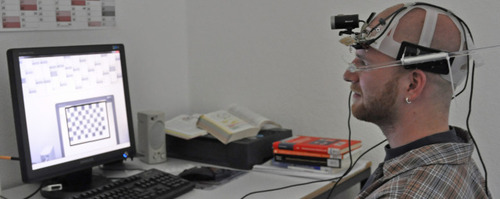

H-eLB: Anti-Schummel-Helm macht Mogeln unmöglich
Gießen (oh). Gießener Medizin-Informatiker haben ein Gerät entwickelt, das Klausurenschreiben zu Hause ermöglicht. Es ist Bestandteil eines Millionenprojekts an der Technischen Hochschule Mittelhessen.
Was Jan Siegenborn da auf dem Kopf hat, ist wahrscheinlich der bescheuertste Hut in der Geschichte der IT-Forschung.
Eine verschlissene Baseballmütze bedeckt das Innere eines Bauarbeiterhelms, und an den Plastikrippen des Helminneren
hängen eine handelsübliche Webcam und ein Wust aus Drähten und Kabeln, Plastikteilen und Platinen. Seitlich klebt
an diesem Hut eine Art durchsichtiger Zauberstab, der ein extradickes Brillenglas hält, hinter dem Jan Siegenborns
linkes Auge kaum zu sehen ist. Das dicke Glas sieht aus, als wolle es wegkippen. Siegenborn, Auszubildender
am Hessischen elektronischen Lernportal für chronisch Kranke und Behinderte (H-eLB) der Technischen Hochschule
Mittelhessen ist dennoch stolz, diesen Hut tragen zu dürfen.

Abbildung: Jan Siegenborn testet den »Anti-Schummel-Helm«, der für 1,4 Millionen Euro derzeit in Gießen entwickelt wird. (Foto: oh)
Der Anti-Schummel-Helm ist nur ein Puzzleteil eines bahnbrechenden Projekts:
Die Medizin-Informatiker Beran und Schneider sind Teil eines jungen Teams, das in vier winzigen Büros mitten
in Gießen gerade daran arbeitet, Behinderten und chronisch Kranken endlich gleiche Chancen auf ein erfolgreiches
Studium zu gewähren. »Dass jemand seine Klausur ablegt, ohne im selben Raum wie der Prüfer zu sein, das ist bisher
absolut undenkbar«, sagt Ahsan Amanullah, Leiter des Projekts und ebenfalls Medizin-Informatiker.
»Viele Menschen sind von einer geregelten Teilnahme am Studium schon deswegen ausgeschlossen,
weil sie einfach nicht jedes Mal an die Uni kommen können«, sagt Amanullah. Um das zu ändern sind die 15 Mitarbeiter
des Projekts angetreten. Vom Land Hessen, vom Bundesgesundheitsministerium, von der Agentur für Arbeit und
vom Paul-Ehrlich-Institut bekommen sie insgesamt 1,4 Millionen Euro, die für vier Jahre reichen müssen.
Angesiedelt ist das H-eLB am Blindenzentrum der THM, dessen Leiterin Erdmuthe Meyer zu Bexten
die Idee zu dem Projekt hatte. Jeder 12. Studierende in Deutschland sei in irgendeiner Form körperlich eingeschränkt,
sagt Amanullah. Jeder 60. leide unter einer extremen gesundheitlichen Einschränkung. Irgendwo dazwischen
setzt der 30-Jährige Projektleiter den Bedarf für die Erfindungen aus dem Labor des H-eLB an.
Damit Klausuren künftig zu Hause geschrieben werden können, entwickeln die Informatiker neben dem Anti-Schummel-Helm
eine Boot-CD, die den PC so konfiguriert, dass nur solche Geräte und Software laufen, die zur Prüfung zugelassen sind.
Alles andere wird unterdrückt. Auf der CD befindet sich ein spezieller Internet-Browser, mit dem sich nur ein einziges
Fenster öffnen lässt: Das für die Klausur. Damit niemand sich die Antworten ermogeln kann. Erst einmal überraschend ist
die Behauptung, das Projekt einer Live-Schaltung von zu Hause in den Hörsaal sei ebenfalls etwas völlig Neues.
»Das können Sie ruhig glauben«, sagt Amanullah, »in Deutschland gibt es bisher keine Live-Vorlesungen,
bei denen ein Feedback möglich ist.« Menschen, die der Vorlesung von daheim folgen, können sich sozusagen melden,
können Fragen stellen und Fragen beantworten. Eine erste Test-Version lässt schon ahnen, was das Portal alles kann:
Die obere Hälfte des Bildschirms zeigt ein Videobild aus dem Hörsaal, den Rest teilen sich ein Fenster für
die Unterrichtsfolien - bei Klausuren stehen hier die Testfragen - und ein Chatfenster. Je nach Art der Behinderung
gibt es zusätzliche Programme, die eine barrierefreie Beteiligung ermöglichen. Zum Beispiel wird für Gehörlose
das gesprochene Wort in schriftlichen Text übersetzt. Dafür braucht es zwar nach heutigem Stand der Technik Text-Dolmetscher,
die dem gehörlosen Studenten das gesprochene Wort abtippen. Doch die Dolmetscher hören die Vorlesung ebenfalls zu Hause
und sparen sich den teuren Weg in den Hörsaal. Wer so eine zusätzliche Hilfe braucht, muss nur bei der Anmeldung
zur Klausur seine Behinderung angeben. Eine Online-Klausur in dieser aufwändigen Form hat sehr wahrscheinlich noch niemand vor ihnen entwickelt,
das haben die Gießener vor kurzem von der Unesco erfahren. Bis zur Marktreife wird es wohl noch drei Jahre dauern,
so lange ist die Forschung finanziell gesichert. Bis zur Anerkennung kann es noch ein weiter Weg sein.
Ob die Kombination aus Anti-Schummel-Helm, Boot-CD und einer staatlich geprüften elektronischen Signatur das Ablegen
von Klausuren zu Hause juristisch wasserdicht macht, ist unklar. »Die juristische Lehrmeinung sieht das im Moment anders«,
gibt Amanullah zu. Aber in Deutschland habe es andererseits jede echte Neuerung in einem empfindlichen
Bereich erst mal schwer bei den Juristen. »Wir müssen jetzt den Zweiflern klar machen, dass die Sache wasserdicht ist und dass
die Menschen darauf angewiesen sind.«
Gießener Allgemeine (10.07.2011)